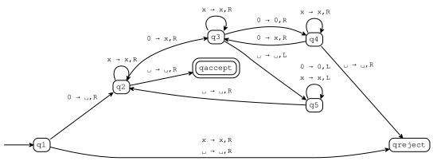
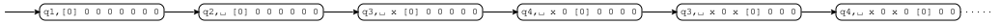

Turing machines¶
[1]:
from tock import *
Creating TMs¶
A Turing machine (TM) can be created with TuringMachine() or by reading from a file. Although Sipser never actually writes the transition function of a TM as a table, it’s a perfectly reasonable thing to do. The machine in Example 3.7 would be:
[2]:
m = read_csv("examples/sipser-3-7.csv")
m.is_pushdown(), m.is_deterministic()
[2]:
(False, True)
[3]:
to_table(m)
[3]:
| 0 | x | ␣ | |
|---|---|---|---|
| >q1 | q2,␣,R | qreject,x,R | qreject,␣,R |
| q2 | q3,x,R | q2,x,R | qaccept,␣,R |
| q3 | q4,0,R | q3,x,R | q5,␣,L |
| q4 | q3,x,R | q4,x,R | qreject,␣,R |
| q5 | q5,0,L | q5,x,L | q2,␣,R |
| @qaccept |
As always, the first column lists the possible states, and the start state is marked with a > and the accept state is marked with a @.
The first row lists possible tape symbols. Use _ for the blank symbol.
In the cells, we write the destination state, the written symbol, and the move direction.
Here’s the state transition diagram, which might or might not be more intuitive:
[4]:
to_graph(m)

Sipser allows a shorthand in which there are multiple symbols to the left of the arrow. For example, the transitions from q5 to itself could be written 0,x -> L for “if the current symbol is either 0 or x, move left”. We don’t allow this; instead, use two transitions. He also allows you to write 0 -> L for “move left and don’t write anything”. Again, we don’t allow this; instead, use 0 -> 0,L.
Running TMs¶
This machine recognizes the language \(\{\texttt{0}^{2^n} \mid n \geq 0\}\). Here are some example runs:
[8]:
run(m, "0 0").only_path()
[8]:
| q1 | [0] 0 |
| q2 | ␣ [0] |
| q3 | ␣ x [␣] |
| q5 | ␣ [x] ␣ |
| q5 | [␣] x ␣ |
| q2 | ␣ [x] ␣ |
| q2 | ␣ x [␣] |
| qaccept | ␣ x ␣ [␣] |
This run ended in the accept state, so the machine accepted the string.
[9]:
run(m, "0 0 0").only_path()
[9]:
| q1 | [0] 0 0 |
| q2 | ␣ [0] 0 |
| q3 | ␣ x [0] |
| q4 | ␣ x 0 [␣] |
| qreject | ␣ x 0 ␣ [␣] |
This run ended in the reject state, so the machine rejected the string.
It’s possible, of course, for a run of a Turing machine to go on forever, so the run function will give up after a certain number of steps. You can control that limit using the steps option:
[10]:
run(m, "0 0 0 0 0 0 0 0", steps=5)

The dotted edge indicates that the run continues but is not shown. In this case, you don’t know whether the machine would eventually accept the string.